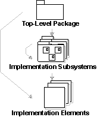
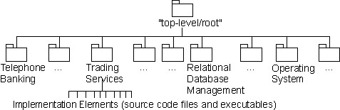

| Guideline: Implementation Model |
 |
|
| Related Elements |
|---|
ExplanationIn the programming environment, an implementation is composed of Implementation Elements, including source code files, binary files, and data files, organized in directories. In addition to these low level elements, there is often the need to create higher level units of management, the Implementation Subsystems, that group Implementation Elements and other Implementation Subsystems. The Implementation Model principally models the Implementation Subsystems, including dependencies and other management information. It may also model key elements of an Implementation Subsystem, such as deployable files, or directory structures.
 The notation in the Implementation Model. The arrows show possible ownership. There is optionally a package that serves as the top-level (root) node in the Implementation Model. Packages, stereotyped as <<implementation subsystem>> group the Implementation Elements (files and directories) and other Implementation Subsystems. Example:In a banking system the implementation subsystems are organized as a flat structure in the top-level node of the implementation model. Another way of viewing the subsystems in the implementation model is in layers. (See Work Product Guideline: Import Dependency).
 The implementation model for a banking system, showing the ownership hierarchy. The Implementation Model not only defines the basic structure of the implementation in terms of hierarchy of Implementation Subsystems, but may also show import dependencies between Implementation Subsystems, compilation dependencies between Implementation Elements, and diagrams that show dependencies between Implementation Model elements and Design Model elements. For more information see:
UseThe Implementation Model focuses on the concern of the physical organization of the software in terms of Implementation Subsystems and Implementation Elements. You may optionally create a single model that addresses both the physical implementation and the logical design in a single model. This is common in a round-trip engineering approach that synchronizes source code files with a combined Implementation/Design Model. The organization of Implementation Subsystems can be more or less close to the Design Model, depending on how you decide to map between these two models. This is an process decision that should be captured in the design guidelines specific to the project. When the mapping is exact, that is, each Implementation Subsystem is also a Design Subsystem, then you can create diagrams that focus on a single Design Subsystem, summarizing both its design and its implementation.
For more information, about how to structure the Implementation Model, and map between Design and Implementation
Models, refer to the Technique: Mapping Design to Code, Task: Structure the Implementation Model, and |

© Copyright IBM Corp. 1987, 2006. All Rights Reserved. |